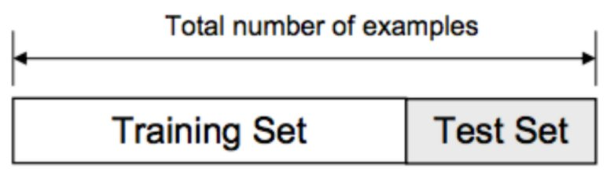

Chapter 3 Data spliting
3.1 Read previously saved data
ObsData <- readRDS(file = "data/rhcAnalytic.RDS")
# Using a seed to randomize in a reproducible way
set.seed(123)
require(caret)
split<-createDataPartition(y = ObsData$Length.of.Stay, p = 0.7, list = FALSE)
str(split)## int [1:4017, 1] 1 2 3 4 5 6 7 8 9 10 ...
## - attr(*, "dimnames")=List of 2
## ..$ : NULL
## ..$ : chr "Resample1"dim(split)## [1] 4017 1dim(ObsData)*.7 # approximate train data## [1] 4014.5 36.4dim(ObsData)*(1-.7) # approximate train data## [1] 1720.5 15.63.2 Split the data
# create train data
train.data<-ObsData[split,]
dim(train.data)## [1] 4017 52# create test data
test.data<-ObsData[-split,]
dim(test.data)## [1] 1718 523.3 Train the model
out.formula1 <- readRDS(file = "data/form1.RDS")
out.formula1## Length.of.Stay ~ Disease.category + Cancer + Cardiovascular +
## Congestive.HF + Dementia + Psychiatric + Pulmonary + Renal +
## Hepatic + GI.Bleed + Tumor + Immunosupperssion + Transfer.hx +
## MI + age + sex + edu + DASIndex + APACHE.score + Glasgow.Coma.Score +
## blood.pressure + WBC + Heart.rate + Respiratory.rate + Temperature +
## PaO2vs.FIO2 + Albumin + Hematocrit + Bilirubin + Creatinine +
## Sodium + Potassium + PaCo2 + PH + Weight + DNR.status + Medical.insurance +
## Respiratory.Diag + Cardiovascular.Diag + Neurological.Diag +
## Gastrointestinal.Diag + Renal.Diag + Metabolic.Diag + Hematologic.Diag +
## Sepsis.Diag + Trauma.Diag + Orthopedic.Diag + race + income +
## RHC.usefit.train1<-lm(out.formula1, data = train.data)
# summary(fit.train1)3.3.1 Function that gives performance measures
perform <- function(new.data,
model.fit,model.formula=NULL,
y.name = "Y",
digits=3){
# data dimension
p <- dim(model.matrix(model.fit))[2]
# predicted value
pred.y <- predict(model.fit, new.data)
# sample size
n <- length(pred.y)
# outcome
new.data.y <- as.numeric(new.data[,y.name])
# R2
R2 <- caret:::R2(pred.y, new.data.y)
# adj R2 using alternate formula
df.residual <- n-p
adjR2 <- 1-(1-R2)*((n-1)/df.residual)
# RMSE
RMSE <- caret:::RMSE(pred.y, new.data.y)
# combine all of the results
res <- round(cbind(n,p,R2,adjR2,RMSE),digits)
# returning object
return(res)
}3.4 Extract performance measures
perform(new.data=train.data,y.name = "Length.of.Stay",model.fit=fit.train1)## n p R2 adjR2 RMSE
## [1,] 4017 64 0.081 0.067 24.647perform(new.data=test.data,y.name = "Length.of.Stay",model.fit=fit.train1)## n p R2 adjR2 RMSE
## [1,] 1718 64 0.056 0.02 25.488perform(new.data=ObsData,y.name = "Length.of.Stay",model.fit=fit.train1)## n p R2 adjR2 RMSE
## [1,] 5735 64 0.073 0.063 24.902